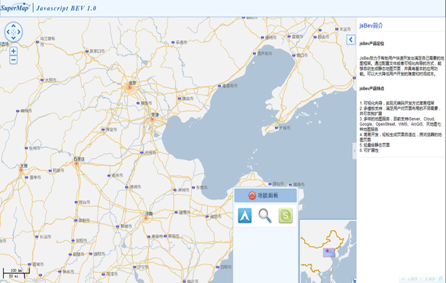

SuperMap JavaScript Bev
JsBev致力于帮助用户快速开发出满足自己需要的地图框架。通过配置文件或者可视化向导的方式，能够自动生成静态地图页面，并具有基本的应用功能。可以大大降低用户开发的难度和时间成本。
请体验 >>
步骤一、模板选择
模版一:上中下布局

模版二：左右布局
模版三：全屏布局
»
«
<< 上一步
下一步 >>
步骤二、地图配置
地图页面名称
地图标题名称
地图初始中心点及层级
经度
纬度
层级
添加地图服务
类型
iServer
SuperMap CloudLayer
天地图
WMS
名称
Url路径
添加
清空
选择控件类型
比例尺
缩放控件
导航控件
图例管理控件
鹰眼
选择功能面板种类
查询
量算
定位
<< 上一步
下一步 >>
步骤三、系统配置
选择发布服务平台
Tomcat Server
IIS信息发布服务
<< 上一步
生成地图 >>